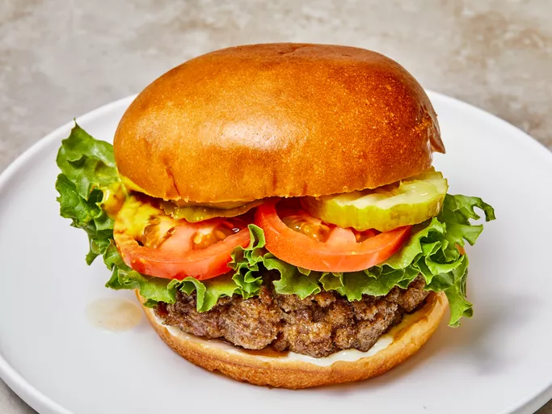

Hamburgers!

No more dry, lackluster hamburgers. These are juicy, and spices can be easily added or changed to suit anyone's taste. If you find the meat mixture too mushy, just add more bread crumbs until it forms patties that hold their shape.
Ingredients
- 1 lb ground beef, 80%
- 4 sesame buns
- 2 tbl finely chopped onion
- 1 clove garlic, minced
- pinch of salt and pepper
- garnish (lettuce, tomato, ketchup, mustard>
Directions
- Combine the onion, garlic, salt, pepper and ground beef in a mixing bowl
- With your hands, knead all the ingredients into the meat
- Break into 4 sections and roll into balls
- Flatten the balls into patties on a cutting board
- Grill for 10-15 minutes at medium heat (350 degrees). Charcoal is best
- Let sit for 5 minutes before eating
- Garnish with lettuce, tomatoes, ketchup and mustard
Return to Main Page